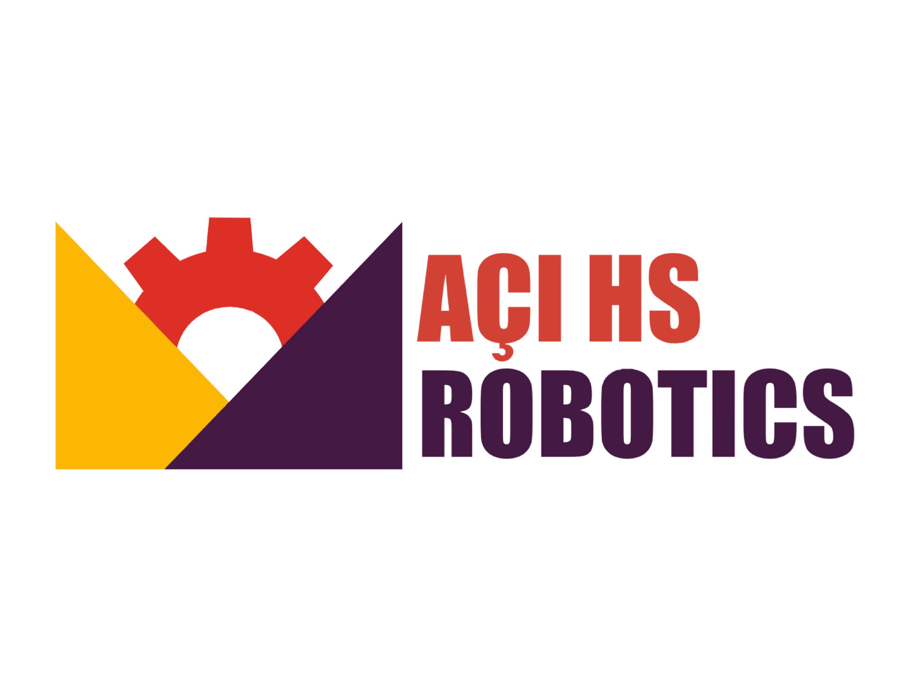

Tech4Peace (#8153)
Tech4Peace, Ekim 2019 tarihinde Açı Okulları bünyesinde kurulmuş bir FIRST Robotik Takımı'dır. Takım numaramız #8153'tür.
Amacımız, öğrencilerin STEM (Bilim, Teknoloji, Mühendislik, Matematik) alanlarındaki yeteneklerini geliştirmek ve genç beyinleri giderek artan teknolojik dünyada çalışmaya hazırlamaktır. Biz, insanların teknoloji ve robotlardan korkmasını değil, insanlığın iyiliği ve daha iyi bir dünya için teknoloji ve robotları kullanmasını istiyoruz — "Tech4Peace" ismi de buradan gelmektedir.
Misyonumuz
Daha parlak bir geleceğe katkıda bulunmak için STEM alanındaki yeteneklerimizi geliştirmek ve daha az kaynağa sahip olanlara hayallerini takip etmeleri için ilham vermektir.
Vizyonumuz
Tüm takım üyelerimizi 21. yüzyıl becerileri ile donatarak geleceğe en iyi şekilde hazırlamaktır.
FIRST Nedir?
FIRST (For Inspiration and Recognition of Science and Technology), dünyanın her yerinden öğrencilerin robot tasarlayıp yarıştığı uluslararası bir organizasyondur. FIRST, gençleri bilim, teknoloji ve mühendislik alanlarında geliştirmeyi amaçlar. Dünya çapında 3.701 takım ile faaliyet göstermektedir.
Bizim katıldığımız yarışma türleri FRC (FIRST Robotics Competition) ve FTC (FIRST Tech Challenge)'dır. Bu yarışmalarda robot tasarlıyor, kodluyor, test ediyor ve takım halinde yarışıyoruz. Her yıl farklı bir görev veriliyor ve biz de yaratıcı çözümler geliştiriyoruz.
Türkiye, FIRST programlarında dünya çapında en yüksek katılıma sahip üçüncü ülke konumundadır.
Yeşil Kilometreler Projesi
Yeşil Kilometreler, Tech4Peace'in yürüttüğü Project Pangea adlı uluslararası çevre projesinin bir parçasıdır. Project Pangea, Birleşmiş Milletler'in 17 sürdürülebilir kalkınma hedefini önceliklendiren, öğrenci liderliğinde bir girişimdir.
Bu projede araçların ne kadar karbon saldığını hesaplıyor ve bu karbonu dengelemek için kaç ağaç dikilmesi gerektiğini gösteriyoruz. Projeyi Yeşil Okul Projesi ile birlikte yürütüyoruz; birlikte okulumuzdaki araç kullanım verilerini toplayarak hesaplama sistemini geliştirdik.
Bize Ulaşın
Instagram:
@acihsrobotics
Web sitesi:
hsrobotics.acischools.k12.tr